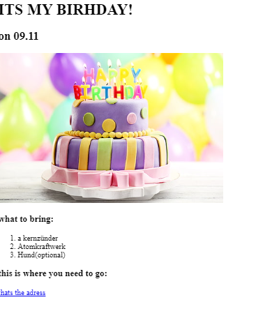

Justus Juraschek`s website
im a web developer
Movie Ranking Project
The best movies According to Justus
My Top 3 Movies of all time
Naruto
this is my favouite animie because of the cool fights
Fight Club
oldschool but very interesting

Birthday Party invite Project

Contact me
info about me